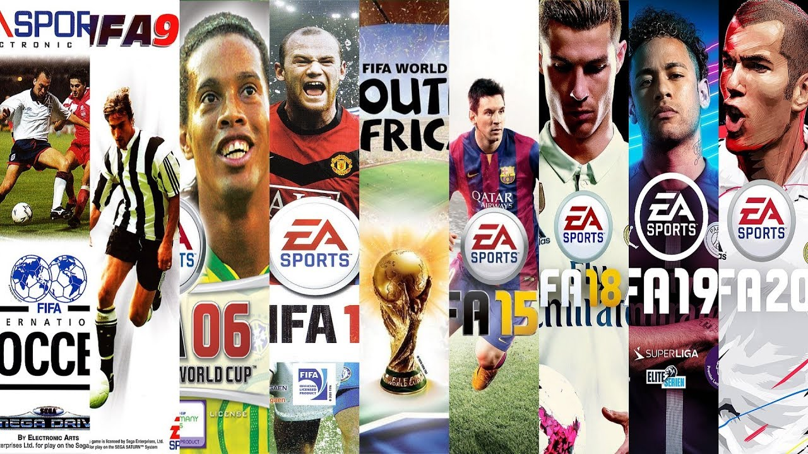

Jocurile FIFA

FIFA este o serie de jocuri video sportive de fotbal de asociere dezvoltate și lansate anual de Electronic Arts sub eticheta EA Sports. Jocurile video de fotbal, cum ar fi Sensible Soccer, Kick Off și Match Day, au fost dezvoltate de la sfârșitul anilor 1980 și erau deja competitive pe piața jocurilor, când EA Sports a anunțat un joc de fotbal ca următoare adăugare la eticheta lor EA Sports. The Guardian a numit seria „cel mai șlefuit, cel mai șlefuit și de departe cel mai popular joc de fotbal din jur”. Începând din 2011, franciza FIFA a fost localizată în 18 limbi și disponibilă în 51 de țări. Listată în Guinness World Records drept cea mai bine vândută franciză de jocuri video sportive din lume, până în 2021, seria FIFA a vândut peste 325 de milioane de exemplare. Este, de asemenea, una dintre cele mai bine vândute francize de jocuri video.

În timp ce FIFA 95 nu a adăugat mult decât capacitatea de a juca cu echipe de club, FIFA 96 a depășit limitele. Pentru prima dată cu nume reale de jucători prin obținerea licenței FIFPro, versiunile PlayStation, PC, 32X și Sega Saturn au folosit motorul „Virtual Stadium” al EA, cu jucători sprite 2D care se deplasau în jurul unui stadion 3D în timp real. FIFA 97 s-a îmbunătățit în acest sens cu modele poligonale pentru jucători și a adăugat un mod de fotbal de interior, dar FIFA a ajuns la un vârf timpuriu: Road to World Cup 98. Această versiune a prezentat o grafică mult îmbunătățită, o Cupă Mondială completă cu runde de calificare (inclusiv toate nivelurile naționale echipe) și un joc rafinat. Câteva luni mai târziu, Cupa Mondială 98, a fost primul joc de turneu cu licență oficială al EA.
John Motson a fost primul comentator al seriei FIFA și a lucrat alături de Ally McCoist, Andy Gray, Des Lynam, Mark Lawrenson și Chris Waddle. Motson s-a alăturat mai întâi francizei pentru FIFA 96; el și McCoist au fost înlocuiți de Gray și Clive Tyldesley pentru FIFA 06, dar mai târziu s-au întors pentru FIFA Manager 08. Martin Tyler a fost comentatorul implicit pentru seria FIFA din 2006 până în 2020, alături de Andy Gray între 2006 și 2010 și Alan Smith din 2011 până în 2020. Derek Rae și Lee Dixon au preluat conducerea în FIFA 21.
Jocurile FIFA au fost întâmpinate cu unele critici minore, cum ar fi îmbunătățirile pe care fiecare joc le prezintă față de predecesorul său. Pe măsură ce piața consolelor se extinde, FIFA este provocată direct de alte titluri, cum ar fi seria Pro Evolution Soccer a lui Konami. Atât FIFA, cât și Pro Evolution Soccer au un număr mare de adepți, dar vânzările FIFA cresc până la 23% de la an la an. În 2010, seria FIFA a vândut peste 100 de milioane de exemplare, făcându-l cea mai bine vândută franciză de jocuri video sportive din lume și cel mai profitabil titlu EA Sports. Cu FIFA 12 care a vândut 3,2 milioane de exemplare în prima săptămână după debutul din America de Nord din 27 septembrie în 2011, EA Sports a numit-o „cea mai de succes lansare din istoria EA Sports”.
În 2012, EA Sports l-a semnat pe Lionel Messi în franciza FIFA, aducându-l departe de competitorul Pro Evolution Soccer. Asemănarea lui Messi a fost apoi plasată imediat pe coperta străzii FIFA. În 2013, fotbalistul profesionist feminin spaniol Vero Boquete a lansat o petiție pe Change.org, care a solicitat Electronic Arts să prezinte jucătoare de sex feminin în seria FIFA. Petiția a atras 20.000 de semnături în 24 de ore. FIFA 16, lansat la 25 septembrie 2015, a inclus echipe naționale feminine.
Numindu-l „cel mai șlefuit, cel mai bun și de departe cel mai popular joc de fotbal din jur” și „echivalentul jocurilor de fotbal din Premier League”, The Guardian a lăudat echipa FIFA Ultimate a jocului, care „te încurajează să cumperi pachete de jucători de tip sticker pentru a construi o echipă de vis ", adăugând că seria are" un mod Journey excelent care vă permite să controlați un profesionist aspirant și să-l construiți într-un superstar internațională și un mod Carieră care vă permite să vă controlați echipa preferată pe teren și în afara terenului. " Una dintre cele mai bine vândute francize de jocuri video, până în 2021, seria FIFA vânduse peste 325 de milioane de exemplare.

Cunoscut sub numele de EA Soccer în timpul dezvoltării și uneori cunoscut și sub numele de FIFA '94, primul joc din serie a fost lansat în săptămânile care au precedat Crăciunul 1993. prezentând o vedere izometrică mai degrabă decât cea mai obișnuită vedere de sus în jos (Kick Off), vedere laterală (European Club Soccer) sau vedere de pasăre (Sensible Soccer). Acesta include doar echipe naționale, iar numele jucătorilor reali nu sunt folosiți. O eroare notorie permite jucătorului să înscrie stând în fața portarului, astfel încât mingea să-i revină în plasă. Jocul a fost numărul unu în topurile din Marea Britanie, înlocuind Street Fighter II Special Champion Edition și rămânând acolo timp de șase luni. Mega a plasat jocul pe locul 11 în Top 50 de jocuri Mega Drive din toate timpurile. Versiunea Sega Mega CD a fost lansată sub titlul „FIFA International Soccer Championship Edition”, care include câteva caracteristici utilizate în titlul următor și este o versiune foarte lustruită a originalului. Această versiune a fost clasată pe locul 7 pe lista Mega din Top 10 Jocuri Mega CD din toate timpurile. Jocul de pe consola 3DO a purtat camere pseudo-3D și a fost cea mai avansată versiune grafică. De asemenea, jocul poate fi redat pe versiunea PlayStation 2 a FIFA 06. A fost realizat în sărbătoare pentru Cupa Mondială FIFA din 1994, care a avut loc în Statele Unite - remarcabil mai ales în versiunea Super NES care, în ciuda faptului că are o selecție de echipă mai mică decât Genesis versiunea, avea trei echipe exclusive care s-au calificat la turneul din viața reală: Bolivia, Arabia Saudită și Coreea de Sud. Jocul a fost numit International Soccer, astfel încât EA ar putea vinde jocul cu succes în Europa, după ce și-a presupus că americanii nu ar avea niciun interes în joc.
Folosind același motor doar cu retușuri minore, FIFA 95 a introdus echipele clubului în serie în opt ligi naționale: Brazilia, Bundesliga Germaniei, Italia Serie A, Liga Spaniei, Anglia Premier League, Franța Ligue 1, Olanda Eredivisie și Statele Unite. Majoritatea ligilor au formații de echipe bazate pe sezonul 1993–94, iar echipele, deși sunt recunoscute ca reale, toate au încă jucători generici, mulți dintre ei revenind chiar din jocul anterior. Liga SUA este formată din echipe și jucători din A-League, a doua divizie a țării - edițiile ulterioare ar prezenta divizii „artificiale” de la o ligă, o caracteristică care nu a fost corectată până la ediția din 2000, când Major League Soccer a fost inclusă pentru prima dată. În plus, liga braziliană conținea doar echipe din statele São Paulo și Rio de Janeiro, cu excepția Internacionalului, din Rio Grande do Sul - abia în FIFA 07 Campeonato Brasileiro a reprezentat țara. Jocul elimină trecerea cu o singură atingere văzută în fotbalul internațional FIFA de fotbal original. Acesta a fost, de asemenea, singurul joc din seria principală care nu a fost lansat pe mai multe platforme (numărând spin-off-urile, doar FIFA 64 și anumite versiuni ale seriei FIFA Manager împărtășesc această distincție).
Acesta este primul joc FIFA care prezintă grafică 3D în timp real pe versiunile Sega Saturn, PlayStation și PC, folosind tehnologia numită „Stadion virtual”. Este, de asemenea, primul din serie care prezintă jucătorilor nume și poziții reale de jucători, cu instrumente de clasare, transfer și personalizare a echipei. Cu toate acestea, echipele braziliene aveau în mare parte liste inexacte, unele dintre ele având chiar și jucători retrași de mult (acest lucru ar fi corectat doar în FIFA 99), iar liga americană era formată din echipe și liste complet fictive (Major League Soccer a fost inaugurată doar pentru câteva luni de la lansarea jocului, dar ar începe să apară în jocuri abia din FIFA 2000). Versiunile SNES și Mega Drive utilizează o versiune actualizată a motorului FIFA 95 cu noi echipe și grafică. Este, de asemenea, primul joc FIFA care conține un editor de jucător / echipă (doar în versiunile Mega Drive și versiunea a cincea generație). De asemenea, pe lângă cele opt ligi naționale din jocul anterior, au debutat trei ligi în joc: Divizia Premieră a Ligii Scoțiene de Fotbal, Allsvenskan și Super League Malaezia, o linie care va rămâne și pentru următoarele două ediții. Acesta a fost, de asemenea, primul joc FIFA care a avut o introducere corectă.
Cea mai mare schimbare în FIFA '97 a fost includerea modului de fotbal în interior 6 și a jucătorilor poligonali, cu captură de mișcare oferită de David Ginola. Jocul prezintă un număr mult mai mare de ligi jucabile din Anglia, Spania, Franța, Italia, Olanda, Germania și Malaezia. Aceste versiuni includ, de asemenea, comentariile lui John Motson, în parteneriat cu Andy Gray, iar Des Lynam prezintă meciurile.
Acest joc marchează începutul unei tendințe ascendente din serie. Se mândrește cu un motor grafic rafinat, opțiuni de personalizare a echipei și jucătorilor, 16 stadii, inteligență artificială îmbunătățită, un mod „Drumul către Cupa Mondială” cu toate echipele naționale înregistrate în FIFA și o coloană sonoră autorizată cu artiști muzicali populari ai vremii. Jocul prezintă multe echipe precise de echipă pentru apeluri naționale atunci când se joacă în modurile de calificare round robin. O altă caracteristică nouă a fost abilitatea de a schimba manual strictețea arbitrului, permițând unor faulturi să nu fie observate sau fără pedeapsă. În plus, pentru prima dată într-un joc FIFA, regula offside-ului este implementată corect. În jocurile anterioare, când un jucător se afla în poziție de offside făcând orice, cu excepția alergării, acel jucător a fost penalizat pentru offside chiar și atunci când mingea a fost trecută înapoi. Versiunea pe 32 de biți a FIFA 98 corectează acest lucru, astfel încât jocul să acorde o lovitură liberă doar pentru ofsaid, dacă mingea ar fi trecut aproximativ la locul în care a fost jucătorul în poziția de ofsaid. FIFA 98 a fost, de asemenea, primul din serie care a prezentat o coloană sonoră licențiată, „Song 2” de Blur fiind folosit ca piesa introductivă a jocului. A fost ultimul joc FIFA care a fost lansat pe consolele de 16 biți pe care seria a apărut.
Această versiune a seriei FIFA conținea peste 40 de echipe „clasice”, astfel încât jucătorii să poată juca ca legende de fotbal retrase. A marcat introducerea Major League Soccer, înlocuind liga fictivă „americană” inclusă anterior, precum și ligile naționale din Danemarca, Grecia, Israel, Norvegia și Turcia (deși Galatasaray nu este prezent în joc). Jocul are peste 40 de laturi naționale, sezoane complet integrate, selecții de piese fixe, contact fizic sporit, noi animații faciale, capacitate de protecție și abordare mai dură. Jocul a primit recenzii mixte datorită motorului său grafic de desene animate și a gameplay-ului superficial, un motor nou-nouț a fost implementat în încercarea de a da mai multă „emoție” modelelor de jucători 3D. Jocul a fost în general considerat a fi mult inferior decât rivalul său. Videoclipul de deschidere pentru FIFA 2000 îl prezintă pe Sol Campbell care îndeplinește sarcini de captare a mișcării pentru joc, având apoi asemănarea generată de computer pentru a juca împotriva unei părți retro din 1904, anul inaugurării FIFA. Jocul a inclus, de asemenea, Port Vale, clubul susținut de Williams, în secțiunea „Restul lumii” (se aflau în acea perioadă în prima ligă de fotbal și în timp ce conceptul de promovare post-sezon și retrogradare a fost introdus în acest ediția, echipele din nivelurile ligii inferioare au fost selectabile numai începând cu FIFA 2004).

Acest titlu avea un nou motor grafic de la Campionatul Mondial de Fotbal FIFA, care permite fiecărei echipe să aibă propriul său kit detaliat și, pentru unii jucători, propriile fețe unice. Eliminând fanionele colorate obișnuite ca embleme de club, licența include pentru prima dată embleme oficiale de club, deși anumite ligi, cum ar fi liga olandeză, sunt fără licență. Fizica ușor modificabilă a făcut din joc un modding preferat pentru comunitatea sa de fani. Jocul include, de asemenea, întreaga Bundesliga austriacă și K-League coreeană ca ligi jucabile pentru prima dată, deși elimină Liga portugheză și Premier League turcească. Este inclusă o caracteristică „hack”, în care jucătorul poate apăsa R1 pentru a încerca un fault intenționat, un astfel de atac cu alunecare ridicată. Acest titlu a fost primul joc din serie cu o bară de putere pentru fotografiere (o astfel de caracteristică exista deja în versiunea Super NES a primului joc, dar nu era în toate versiunile jocului). FIFA 2001 a fost prima versiune (pentru PC) care a putut fi jucată online, care a fost revoluționară, și primul joc din franciză pe o consolă de jocuri video de generația a 6-a din SUA și Europa. Versiunea PlayStation a FIFA 2001 a primit un premiu de vânzări „Gold” de la Entertainment and Leisure Software Publishers Association (ELSPA), indicând vânzări de cel puțin 200.000 de exemplare în Regatul Unit.
Pentru FIFA Football 2002, au fost introduse bare de putere pentru pase, iar driblingul a fost redus pentru a atinge un nivel de provocare mai ridicat. Bara de alimentare poate fi, de asemenea, personalizată pentru a se potrivi preferințelor jucătorului. Jocul include, de asemenea, embleme de cluburi pentru multe mai multe cluburi europene, precum și pentru cluburi olandeze importante, cum ar fi PSV, Ajax și Feyenoord, deși nu exista nici o ligă olandeză de niciun fel (erau sub antetul „Restul lumii”). Acest joc prezintă, pentru prima dată, Super League elvețiană, cu prețul excluderii Ligii grecești. A fost introdus și un sistem de recompensare a cărților licențiat de la Panini în care, după ce a câștigat o anumită competiție, se deblochează o carte de jucător stea. Există, de asemenea, un joc bonus cu națiunile care s-au calificat automat la Cupa Mondială din 2002 (Franța, Japonia și Coreea de Sud), în care jucătorul încearcă să îmbunătățească clasamentul FIFA al echipei lor alese participând la amicale internaționale. Jocul cu alte echipe naționale îi va permite jucătorului să joace prin rundele de calificare ale zonelor respective (cu excepția Oceania și Africa, ale căror confederații nu sunt reprezentate în totalitate). FIFA Football 2002 a fost ultimul joc din seria principală cu echipa națională japoneză, întrucât Asociația Japoneză de Fotbal își va vinde drepturile exclusive asupra Konami în 2002, privând astfel nu numai FIFA, ci și toate celelalte jocuri de fotbal de pe piață (cu cu excepția spin-off-urilor Cupei Mondiale ale EA), de la utilizarea gamei și asemănării sale (jucătorii japonezi de pe piețele străine au continuat să apară în serie, însă) până la FIFA 17.
FIFA Football 2003 a adăugat caracteristici de joc complet noi din titlurile anterioare. EA a modernizat grafica învechită DirectX 7 folosită în FIFA 2001 și 2002 și a introdus noi grafică cu stadii, jucători și truse mai detaliate. Modul Campionat Club a fost introdus cu caracteristica de a juca împotriva a 17 dintre cele mai bune cluburi europene din propriile stadioane și fanii cântând cântările și cântecele lor unice. Un pachet de difuzare în stil TV a oferit momente importante la jumătate de normă și cu normă întreagă, precum și analize cuprinzătoare. Una dintre cele mai așteptate caracteristici noi a fost „Freestyle Control” de la EA Sport, care permite utilizatorului să arunce mingea pe ea și să o trimită colegilor de echipă. Alte adăugiri includ asemănări mai mari de jucători precum Thierry Henry și Ronaldinho, precum și răspunsuri realiste ale jucătorilor. O versiune Xbox a fost adăugată la Windows și PlayStation 2, în timp ce versiunea originală PlayStation a fost abandonată. FIFA Football 2003 a fost, de asemenea, primul joc din serie care a folosit EA Trax. EA Trax este sistemul exclusiv de meniu muzical care a fost folosit de atunci în toate titlurile FIFA.
Deși nu adaugă prea mult motorului de joc, cea mai mare nouă includere în FIFA Football 2004 sunt diviziunile secundare, care permit jucătorului să ia echipe de rang inferior în ligile și competițiile de top (un sistem de promovare / retrogradare a fost prezent încă din ediția din 2000, dar niciunul până când acesta nu conținea ligi de nivelul doi). A fost introdusă o nouă caracteristică de joc denumită „off ball”, care este capacitatea de a controla simultan doi jucători, pentru a muta, de exemplu, un al doilea jucător în careu în așteptarea unei pase. Modul online a fost susținut ca principală caracteristică. O altă caracteristică cheie este „Football Fusion”, care permite atât proprietarilor FIFA 2004, cât și ai Total Club Manager 2004 să joace jocuri de la TCM în FIFA 2004. Acesta este, de asemenea, primul joc FIFA care prezintă echipe de cluburi din America Latină, în afară de cele din Liga braziliană. ; sunt patru din Mexic (America, Toluca, Monterrey și UNAM; o a cincea echipă, Tigres UANL, este prezentă doar în versiunea Game Boy Advance) și două din Argentina (Boca Juniors și River Plate). Secvența de titlu, cu Ronaldinho, Thierry Henry și Alessandro Del Piero, a fost filmată la St James 'Park, terenul natal al Newcastle United.
FIFA Football 2005 a fost lansat mult mai devreme decât data obișnuită de la sfârșitul lunii octombrie, pentru a obține un avans în fața Pro Evolution Soccer 4 și pentru a evita ciocnirea cu propria FIFA FIFA Street a EA Sports. Jocul prezintă revenirea modului de creare a unui jucător, precum și un mod îmbunătățit Carieră. Cea mai mare diferență în comparație cu titlurile anterioare din serie este includerea gameplay-ului la prima atingere, care oferă jucătorilor posibilitatea de a efectua trucuri și pase în viața reală. Este, de asemenea, prima versiune care prezintă întreaga ligă mexicană. Jocul nu are niciun videoclip de deschidere, dar coloana sonoră este titlată de DJ-ul britanic Paul Oakenfold, care a compus tema FIFA special pentru joc, folosind unele sunete din joc, cum ar fi zgomotul artificial al comentariilor și zgomotul. Acesta a fost ultimul titlu lansat pentru PlayStation original în SUA. Jocul prezintă, de asemenea, cântări autentice de mulțime editate de producătorul Dan Motut.
Dezvoltatorii FIFA au făcut o revizuire completă a motorului de joc pentru această tranșă a FIFA, susținând o creștere dramatică a controlului jocului, după ce au rescris mai mult de jumătate din codul jocului. În plus față de o renovare a motorului, care elimină sistemul „off the ball”, dezvoltatorii s-au lăudat cu un mod Carieră mult mai implicat și cu introducerea „chimiei echipei” care determină cât de bine joacă membrii echipei împreună. Această tranșă încalcă tradiția îndelungată a comentariilor din meciul zilei, John Motson și (mai recent), Ally McCoist, care sunt înlocuiți de Clive Tyldesley de ITV și fostul pundit Sky Sports Andy Gray, care a lucrat deja în serie ca comentator invitat. Una dintre noile caracteristici din FIFA 06 a fost un „retro” special, care prezintă nostalgia jocului. În interior include o secțiune de biografii clasice deblocabile, o compilație video de momente memorabile, care prezintă zece dintre cele mai memorabile momente, după cum au judecat dezvoltatorii FIFA 06, o compilație video cu o vizualizare retrospectivă a fiecărui joc din seria FIFA și șansa de a juca primul joc din seria FIFA care a fost intitulat „FIFA 94”. Jocul prezintă, de asemenea, pentru prima dată o echipă Classic XI formată din legende de fotbal minunate și o echipă World XI formată din super-stele actuale. Ambele echipe au stadionul principal Cardiff Millennium Stadium. Aceste cluburi trebuie deblocate în „Fan Shop”. Versiunea Xbox 360, intitulată FIFA 06: Drumul către Cupa Mondială FIFA, conținea doar echipe naționale și un motor nou-nouț care profita de capacitățile grafice ale Xbox 360. A fost primul joc FIFA pe o consolă de generația a șaptea.
Principalele diferențe față de jocul anterior sunt o nouă funcție „Interactive Leagues”, noi stadii precum noul stadion Wembley și Emirates Stadium și capacitatea de a crea echipe personalizate și Turkcell Super League revine după șapte ani de absență din serie. Front-end-ul și motorul grafic al jocului rămân în mare parte aceleași. Versiunea Xbox 360 folosește un motor de joc complet nou, care a fost creat de la zero pentru sistem. Această versiune Xbox 360 are, de asemenea, o gamă de echipe mult mai redusă, eliminând complet toate echipele din diviziile inferioare și concentrându-se pe cele patru ligi europene principale, plus Clausura mexicană și echipele naționale. Acesta a fost ultimul titlu lansat pentru GameCube, Xbox și Game Boy Advance.
FIFA 08 a introdus un nou mod de joc numit „Be a Pro”, în care jucătorul controlează doar un singur jucător pe teren. Această versiune a introdus, de asemenea, o secțiune mai mare de cluburi, incluzând Liga Irlandei și Hyundai A-League din Australia, pentru prima dată. Cu toate acestea, spre deosebire de FIFA 06 și 07, FIFA 08 nu include momente memorabile sau momente importante ale sezonului. Această ediție a introdus funcția Practice Arena, care a permis antrenamentul și îmbunătățirea driblingului, a tragerii sau a exersa lovituri libere și penalty-uri în timpul antrenamentului. A fost primul joc din franciză pentru PlayStation 3 și Wii, acesta din urmă introducând comenzi de mișcare pentru pase, precum și trei mini-jocuri care folosesc telecomanda Wii.
FIFA 09 are un sistem de coliziune revigorat și o opțiune pentru 10 meciuri online „Fii un Pro”, precum și noua caracteristică „Adidas Live Season”, care actualizează toate statisticile jucătorilor dintr-o anumită ligă în funcție de forma jucătorului în realitate viaţă. Deși funcția este activată prin microtransacțiuni, jucătorii au acces la o ligă gratuită la alegere din momentul în care activează serviciul până la sfârșitul sezonului 2008-09. Jocul online a fost, de asemenea, îmbunătățit în FIFA 09, cu o caracteristică numită „FIFA 09 Clubs”, permițând jucătorilor să formeze sau să se alăture cluburilor și să își prezinte cea mai puternică echipă online. Jocul este primul din seria FIFA care prezintă sărbători de obiecte controlate de utilizator. FIFA 09 a primit întâmpinări în general pozitive din partea recenzorilor. Clive Tyldesley și Andy Gray oferă din nou comentariul în versiunea în limba engleză. Cu toate acestea, în versiunile PS3 și Xbox 360 ale jocului, Tyldesley este înlocuit de Martin Tyler. Pentru prima dată, utilizatorii pot achiziționa, de asemenea, voci suplimentare de comentatori în diferite limbi de pe PlayStation Store (PlayStation 3) și Xbox Live Marketplace (Xbox 360). O altă opțiune pentru limba engleză este Tyldesley și Andy Townsend.
FIFA 10 are un Mod Manager extins care include un nou Asistent Manager care poate fi folosit pentru a avea grijă de echipa echipei și pentru a roti echipa pe baza importanței viitorului meci și a finanțelor îmbunătățite. „Sistemul de experiență și creștere a jucătorului” s-a schimbat. Creșterea jucătorului va fi acum determinată de performanța din joc, de cerințele impuse jucătorului și de realizările bazate pe poziția specială a jucătorului. Jocurile prezintă, de asemenea, 50 de stadii și 31 de ligi, printre care Premier League rusă este introdusă în serie (cu excepția versiunilor PlayStation 3 și Xbox 360). De asemenea, include controlul jucătorului la 360 de grade în loc de controlul pe 8 direcții în jocurile anterioare.

FIFA 11 a fost lansat pe 28 septembrie 2010 în America de Nord și pe 1 octombrie 2010 în Europa. Dispune de un nou înlocuitor al modului Manager numit Mod carieră; jucătorul poate juca o carieră ca manager, jucător sau o nouă funcție ca manager de jucător. Alte caracteristici noi includ un sistem de trecere îmbunătățit, asemănări îmbunătățite ale jucătorilor, capacitatea de a juca ca portar pentru prima dată și alte diverse alte modificări și completări. Comentariul în limba engleză este furnizat pentru a patra oară de Martin Tyler și Andy Gray. Landon Donovan, Kaká și Carlos Vela apar pe coperta versiunii nord-americane a jocului, în timp ce Kaká și Wayne Rooney apar pe coperta versiunii britanice și irlandeze. În afară de Kaká și Rooney, Petr Čech și Andrés Iniesta sunt, de asemenea, vizibile în joc, apărând în ecranele din joc, precum meniurile versiunii pentru PC.
David Rutter, producătorul de linie pentru FIFA 12, a promis „un an revoluționar pentru FIFA ... în special în departamentul de gameplay.” Prima captură de ecran a fost dezvăluită pe 11 aprilie, unde mijlocașul brazilian Kaká alerga pe teren. FIFA 12 este prima ediție a seriei care conține comentarii arabe. Liga Cehă întâi și Süper Lig turcesc sunt scoase din joc (deși echipa turcă Galatasaray este încă prezentată) și o a treia echipă argentiniană, Racing Club de Avellaneda, este adăugată în categoria Rest of World. Xbox 360 și PlayStation 3 au fost principalele console pentru joc și, pentru prima dată, versiunea pentru PC a fost identică cu caracteristicile. În mai, EA a anunțat că va fi disponibilă o versiune Nintendo 3DS, inclusiv modul carieră, 11 vs 11, modul stradă și Be a Pro, dar excluzând orice mod online. Pe 27 mai, s-a confirmat că FIFA 12 va fi lansat pe PlayStation 2. Pe 7 iunie, s-a confirmat că vor fi incluse și iPhone, iPad și iPod Touch, iar altele vor veni în următoarele luni. La 11 iulie, au fost lansate fotografii ale modului carieră. În timpul lansării demonstrației din 13 septembrie 2011, atât FIFA 12, cât și Xbox Live erau în tendințe pe site-ul de socializare Twitter. Pentru prima dată în serie, jocul a fost portat oficial pe sistemul de operare Mac OS X de TransGaming. În martie 2012, FIFA Football a fost lansat ca titlu de lansare pentru PS Vita, care, în ciuda numelui diferit, era un port al FIFA 12.
Pe Xbox 360 și PlayStation 3, jocul este primul din serie compatibil cu Kinect și, respectiv, PlayStation Move. Jocul prezintă și Liga Profesională Saudită, prima dată când fotbalul arab este reprezentat în serie (în timp ce FIFA 2000 a inclus echipe de cluburi din lumea arabă, era vorba de echipe generice cu uniforme nedistinctive). Este singurul titlu FIFA lansat pe Wii U.
Pentru cea mai nouă generație de console de jocuri video PlayStation 4 și Xbox One, jocul prezintă un nou motor, Ignite, care permite nu numai îmbunătățiri grafice, cum ar fi schimbarea condițiilor meteorologice și mediul dinamic, ci și schimbări în joc, cu caracteristici precum Human Inteligența (care apropie AI de comportamentul real al jucătorului) și True Player Motion (care oferă jucătorilor animații mai realiste). De asemenea, toate versiunile au un nou mod online Co-op Seasons, în care doi jucători pot juca un sezon pentru aceeași echipă. În ceea ce privește selecția echipei, jocul prezintă, pentru prima dată, ligile de top din Argentina, Chile și Columbia, prima dată când ligile sud-americane, altele decât cea braziliană, sunt prezentate într-un joc FIFA. Versiunea pentru PC nu include motorul Ignite (care va fi exclusiv pentru versiunile PlayStation 4 și Xbox One); mai degrabă decât atât, vor avea motorul Impact, la fel ca în versiunile PlayStation 3 și Xbox 360 (pe care versiunile pentru PC le folosesc de la 11), cu îmbunătățiri minore. Se pare că acest lucru se datorează afirmațiilor Electronic Arts că majoritatea jucătorilor de PC nu dețin o mașină suficient de puternică pentru motorul Ignite, prin urmare ar fi prezentată doar în ediția următoare. Acesta este ultimul joc FIFA lansat pentru PlayStation Portable, iar FIFA 14 va deveni în cele din urmă ultimul joc PlayStation 2 produs și lansat în America de Sud. Jocul prezintă noi sărbători de semnături ale unor jucători, printre care Cristiano Ronaldo, Gareth Bale și Lionel Messi, printre altele.
Ultimul titlu pentru Wii și handheld. Versiunea Windows a folosit pentru prima dată noul motor (Ignite Engine), care este același cu PlayStation 4 și Xbox One. Prima ediție lansată în timpul acordului EA cu Premier League engleză în calitate de partener oficial de tehnologie sportivă. Această ofertă permite ca toate cele 20 de stadioane din Premier League să fie incluse în joc, precum și tablouri de marcaj oficiale din Premier League și grafică pentru televiziune. Accesul exclusiv al FIFA la cluburile din Premier League a permis fotografierea detaliată a tuturor celor 20 de stadioane, astfel încât acestea să poată fi recreate în mod autentic, cu înveselirile, cântările și sunetele a peste 20 de meciuri din Premier League, de asemenea înregistrate. De la acest joc, oricărui club promovat în Premier League i s-a adăugat stadionul. Din cauza problemelor de licențiere cu jucătorii brazilieni, acesta a fost primul joc din seria principală care nu a prezentat o ligă braziliană sub nicio formă.
FIFA 16 a fost primul titlu din serie care a inclus sportive feminine și echipe naționale. După complicațiile din ediția anterioară, unele echipe braziliene au fost de acord să-și împrumute identitatea vizuală (ecusoane, nume și truse) jocului, dar nu s-a ajuns la un astfel de acord cu jucătorii din cauza descentralizării drepturilor de imagine ale jucătorilor în Brazilia; ca rezultat, echipele braziliene sunt plasate în blocul Rest of World (primind propriul slot de ligă incomplet în edițiile următoare), cu listele lor cuprinse complet de jucători fictivi, spre deosebire de toate celelalte cluburi și majoritatea echipelor naționale.
FIFA 17 este primul joc video din seria FIFA care folosește motorul de joc Frostbite și, de asemenea, primul care implementează un mod de poveste, și anume "The Journey". De asemenea, dispune de Liga Japoneză J1 pentru prima dată, prima dată când un joc de fotbal pentru piața internațională prezintă liga.
FIFA Mobile este primul joc mobil al FIFA care folosește noul mod de atac, evenimente live, ligi, planuri de jucători și pachete de programe. Dispune de programe sezoniere pentru ca jucătorii să obțină diferite pachete și jucători prin finalizarea diferitelor planuri, evenimente live și realizări. FIFA a refăcut ulterior modul de atac la VS Attack la actualizarea lor 6.0.1 din 19 mai 2017. Începând cu 1 noiembrie 2017, a fost introdus un nou mod numit „campanie”, în care jucătorii se confruntă cu diferite echipe din întreaga lume, de la mici cluburi de amatori la cele mai bune cluburi profesionale din lume. A fost introdusă și capacitatea de a îmbunătăți jucătorii „antrenându-i”. Jocul prezintă, de asemenea, Evenimente Live tematice la evenimentele recente din lumea reală, precum și mini-jocuri bazate pe abilități precum tragerea, trecerea, driblingul și portarul.
FIFA 18 este primul titlu care prezintă ICON-urile echipei Ultimate pe toate sistemele, inclusiv PlayStation 4, Xbox One, Nintendo Switch și PC. Jocul prezintă, de asemenea, al treilea nivel al ligii germane de fotbal, Liga 3., echipa națională de fotbal a Islandei, echipa națională de fotbal a Arabiei Saudite, echipele naționale din Noua Zeelandă, atât masculine, cât și feminine, și are din nou Superliga turcă după ce EA și-a reînnoit licența cu ei. EA Sports a introdus Quick Subs în FIFA 18, unde jucătorul poate înlocui când mingea iese din joc. Turnul Cruyff - o fintă numită după vedeta olandeză din anii 1970, Johan Cruyff - este una dintre cele patru noi abilități adăugate jocului.
FIFA 19 introduce în competiții UEFA Champions League, Europa League și Supercupa UEFA. Martin Tyler și Alan Smith se întorc în calitate de comentatori obișnuiți, în timp ce noua echipă de cometary formată din Derek Rae și Lee Dixon apar în UEFA Champions League. Compozitorul Hans Zimmer și rapperul Vince Staples au înregistrat un nou remix al imnului UEFA Champions League special pentru FIFA 19 și a apărut în trailerul dezvăluit. Personajul Alex Hunter (care a apărut pentru prima dată în FIFA 17) revine pentru a treia și ultima tranșă din „The Journey”. Jocul include Super League din China, primul titlu FIFA care a făcut acest lucru. Jocul este programat cu noi moduri de lansare - regulă internă, mod de supraviețuire, fără reguli, distanță lungă, antet și volei și primul mod.
O nouă caracteristică în FIFA 20 intitulată Volta Football este o renaștere a elementelor anterioare în stilul FIFA Street, oferind o varianță în jocul tradițional 11v11. Este setat să includă abilitatea de a juca 3v3 Rush (fără GK's), 4v4, 4v4 Rush, 5v5 și moduri profesionale de futsal. Jocul pune accentul pe abilități și joc independent, mai degrabă decât pe jocul tactic sau în echipă. Jucătorul poate, de asemenea, să își personalizeze propriul jucător; În afară de selectarea sexului, jucătorii vor avea, de asemenea, o varietate de haine și accesorii din care să aleagă, de la încălțăminte și haine la pălării și tatuaje. Modul tradițional 11v11 s-a schimbat, de asemenea, cu mai multe încurajări 1-la-1, mai mult spațiu în afara mingii, precum și noi mecanici de penalizare și lovitură liberă. Juventus nu a fost în FIFA 20 deoarece a semnat un acord de parteneriat cu PES 2020. Au fost numiți Piemonte Calcio în FIFA 20. Liverpool a anunțat un parteneriat „pe termen lung” cu FIFA.